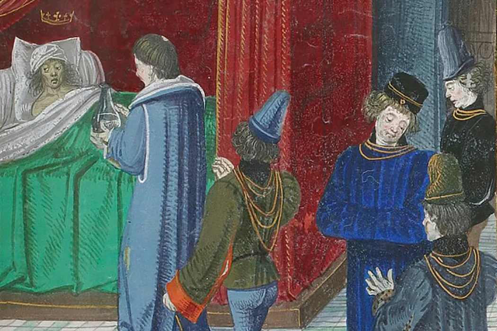

In the 16th and 17th centuries of Europe, glass became a valuable commodity. It was regarded as a magical, alchemical object. Associated with fragility and luxury, glass influenced the way noblemen of early Europe perceived their esteemed positions in society. This fixation on a novel material contributed to the manifestation of the delusion. Edward Shorter, a historian of psychiatry from the University of Toronto, attributes the rise of the delusion in 17th century Europe to the novelty of glass material, stating that "throughout history, the inventive unconscious mind has pegged its delusions on to new materials and the technological advances of the age."
Concentration of the glass delusion among the wealthy and educated classes allowed modern scholars to associate it with a wider and better described disorder of melancholy.